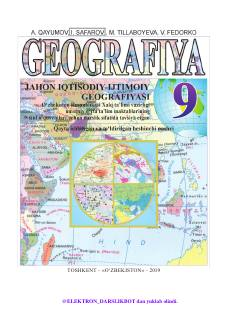

9G9-sinf o'quvchilari uchun jahon iqtisodiy va ijtimoiy geografiyasi bo'yicha darslik.
Ushbu darslik umumiy o'rta ta'lim maktablarining 9-sinf o'quvchilari uchun mo'ljallangan bo'lib, jahon iqtisodiy va ijtimoiy geografiyasi fanini qamrab oladi. Kitobda jahonning siyosiy xaritasi, tabiiy resurslar, aholi va xo'jalik tizimlari hamda mintaqaviy geografik xususiyatlar batafsil yoritilgan.